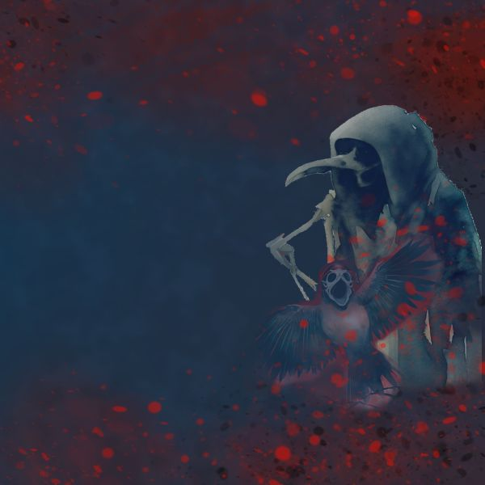
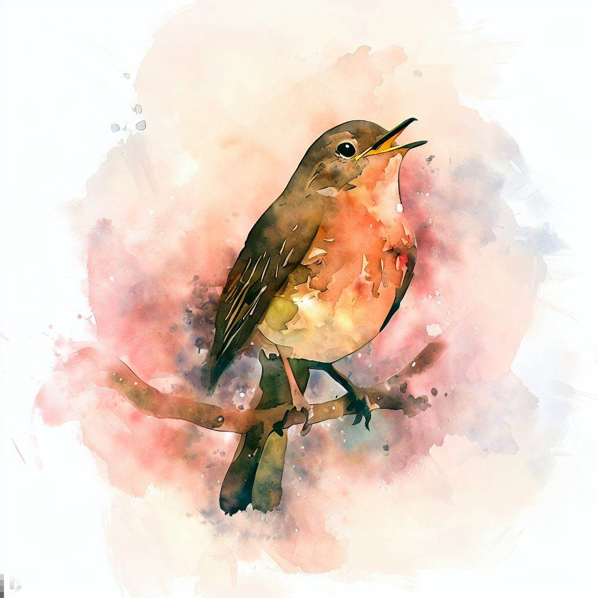
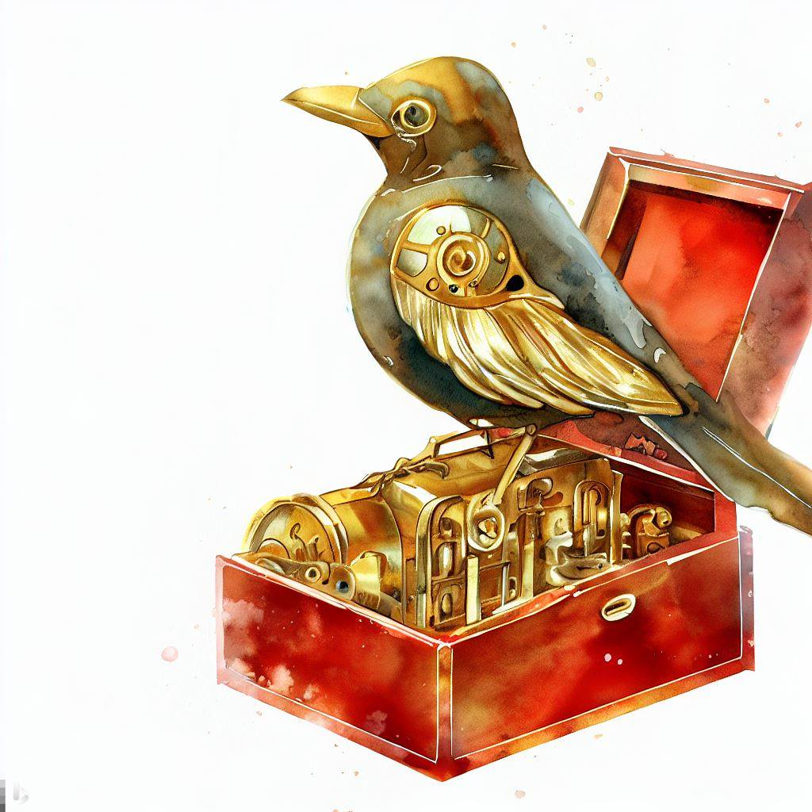
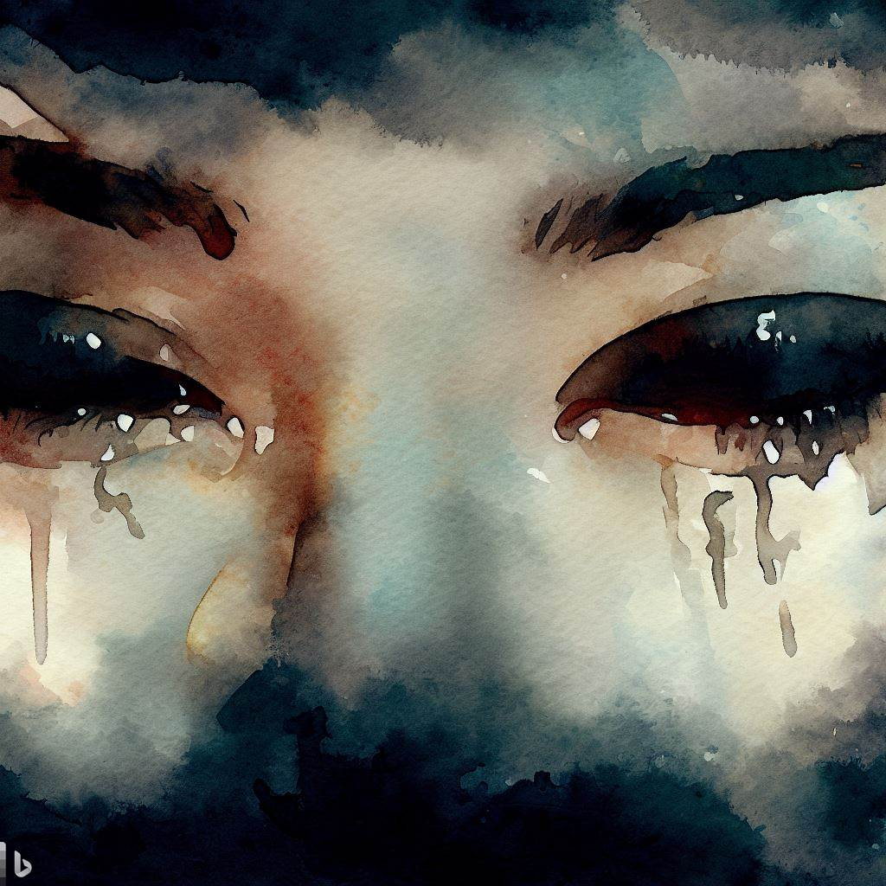
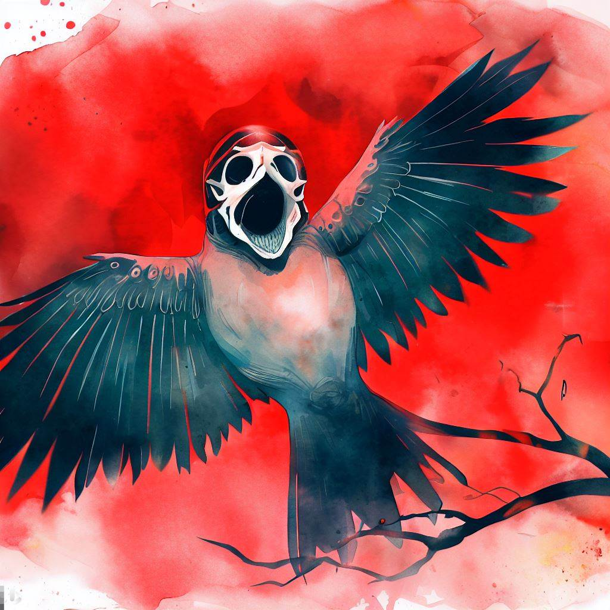

Bitacora
Un repaso por las imagenes y procesos
Las imagenes fueron creadas por IA, en este caso bing Creator. Hay una cierta falta de imagenes ya que al ser hechas por IA las fui sacando 1 por 1.

El trabajo hecho a mano
Una de las complicaciones que encontre al trabajar con IA fue la falta de posibilidades en el formato de la imagen. Intente de muchas maneras lograr un fondo transparente en la imagen y me fue imposible. Con estos problemas por delante decidi hacerlos por cuenta propia con el uso del programa krita.
Las imagenes que hice con Ia (Inteligencia Artificial)
Con estas imagenes no diria que fue un proceso dificil, mas que nada llevo tiempo y fue tedioso, ya que tenes que ser muy especifico y en el caso de Bing creator debes evitar palabras fuertes como "muerte" entonces tuve que ingeniearmelas. De haber sabido que ibamos a poder usar a futuro los intentos fallidos las hubiera guardado, pero tenia muy en claro que estilo queria y de que manera por la ruta ya mostrada que busque las pantallas especificas. A falta de las imagenes pondre las imagenes descargadas las cuales yo creo que fueron las mas trabajadas por la importancia que les queria dar.
   